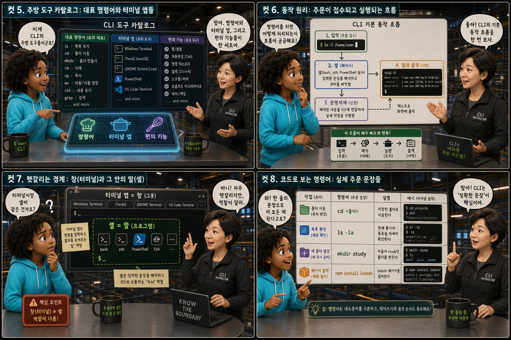
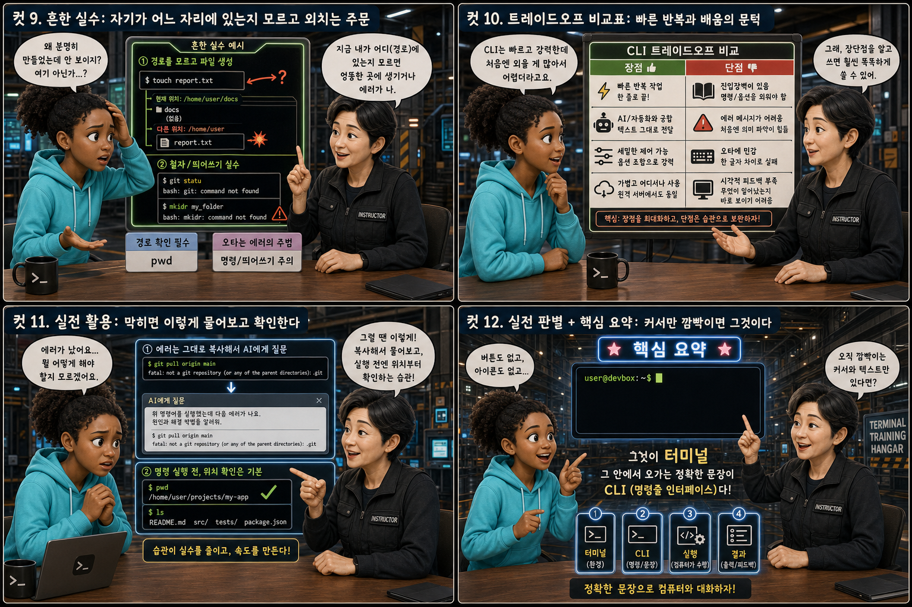

손이 아니라 말로 움직이는 주방에 비유해, 검은 창 안에서 오가는 명령어의 세계를 12컷으로 풀어봅니다.
GUIvsCLI
우리는 평소 화면 속 버튼과 아이콘을 손가락으로 눌러 컴퓨터에게 무언가를 시킵니다. 그런데 개발자들이 즐겨 여는 화면 한구석에는 아무 그림도 없이 깜빡이는 커서만 있는 낯선 검은 창이 있습니다. 이 창의 이름은 터미널이고, 이 창 안에서 문장으로 명령을 주고받는 방식을 CLI(Command Line Interface)라고 부릅니다. 이 글은 아이콘을 누르는 GUI의 손 대신, 정확한 구두 주문으로 움직이는 주방 하나에 비유해 그 정체를 하나씩 풀어봅니다.
PART 1 / 3 — 두 세계의 발견 (컷 01–04)
fourcut-01 — 컷 01 ~ 04
컷 01
이 까만 창은 대체 무엇일까
화면 속 아이콘을 마우스로 클릭하는 대신, 정확한 문장 한 줄을 입력하면 컴퓨터가 그대로 실행하는 낯선 검은 창이 있다.
우리는 평소 화면 속 버튼과 아이콘을 손가락으로 눌러 컴퓨터에게 무언가를 시킵니다. 그런데 개발자들이 즐겨 쓰는 화면 한구석에는 아무 그림도 없이 깜빡이는 커서만 있는 낯선 검은 창이 있습니다. 이 창의 이름은 터미널이고, 이 창 안에서 문장으로 명령을 주고받는 방식을 CLI(Command Line Interface)라고 부릅니다. 이 시리즈는 손이 아니라 말로 움직이는 주방에 비유해 그 정체를 하나씩 살펴봅니다.
컷 02
정의부터 명확히: 창 하나와 그 안의 대화법
터미널은 텍스트로 명령을 입력하고 결과를 텍스트로 돌려받는 프로그램(그릇)이고, CLI는 그 안에서 명령어 문장으로 컴퓨터와 대화하는 방식(화법)이다.
터미널(Terminal)은 문자를 입력하면 그 문자를 컴퓨터에 전달하고, 처리된 결과를 다시 문자로 화면에 찍어주는 프로그램입니다. 이 창 자체는 그저 대화가 오가는 그릇일 뿐입니다. CLI(Command Line Interface)는 그 그릇 안에서 우리가 실제로 사용하는 대화의 방식, 즉 정해진 명령어 문장으로 컴퓨터에게 지시를 내리고 응답을 받는 화법을 가리킵니다. 마치 주방이라는 공간(터미널)과 그 안에서 주고받는 정확한 주문 화법(CLI)이 서로 다른 개념인 것과 같습니다.
GUI(Graphical User Interface)는 아이콘과 버튼을 눈으로 보고 마우스로 클릭하는 방식이라 처음 배우기 쉽고 직관적입니다. 하지만 같은 작업을 여러 번 반복해야 한다면 매번 같은 클릭을 되풀이해야 하니 손이 아플 만큼 느려집니다. CLI(Command Line Interface)는 명령어 문장을 정확히 외워서 타이핑해야 하니 처음에는 낯설고 어렵게 느껴집니다. 그러나 한 번 정확한 문장을 완성해두면 그 문장을 그대로 복사해 100번이든 1000번이든 반복하거나, AI에게 그대로 전달해 자동으로 실행시킬 수 있다는 점에서 반복 작업과 자동화에 훨씬 강합니다.
컷 04
한 문장으로 정리하면
터미널은 손이 아니라 말로 움직이는 주방이고, CLI는 그 주방에서 정확한 문장으로 주문하는 화법이다.
GUI
손으로 눌러 움직이는 방식
CLI
말(문장)로 움직이는 방식
definition
터미널은 손이 아니라 말로 움직이는 주방입니다. 이 한 문장만 기억해도 왜 개발자들이 마우스 대신 키보드로 문장을 쳐서 컴퓨터를 다루는지 이해할 수 있습니다. 화면을 눌러 움직이면 GUI, 문장으로 정확히 지시해서 움직이면 CLI입니다.
PART 2 / 3 — 도구와 동작 원리 (컷 05–08)

fourcut-02 — 컷 05 ~ 08
컷 05
주방 도구 카탈로그: 대표 명령어와 터미널 앱들
CLI에는 자주 쓰는 대표 명령어들과 그 명령어를 입력하는 다양한 터미널 앱, 그리고 입력을 도와주는 편의 기능들이 있다.
CLI에서는 cd로 폴더를 이동하고, ls(맥/리눅스)나 dir(윈도우)로 폴더 안 내용을 보고, mkdir로 새 폴더를 만듭니다. npm과 pip는 각각 자바스크립트와 파이썬 패키지를 설치하는 명령어이고, git은 코드의 변경 이력을 관리하는 명령어입니다. 이 명령어들은 macOS의 Terminal, 윈도우의 PowerShell, 또는 Git Bash 같은 여러 터미널 앱 안에서 똑같이 사용할 수 있습니다. 또한 Tab 키를 누르면 폴더나 파일 이름을 끝까지 자동으로 채워주고, 위아래 화살표 키를 누르면 이전에 입력했던 명령어를 다시 불러올 수 있어 매번 처음부터 다시 칠 필요가 없습니다.
컷 06
동작 원리: 주문이 접수되고 실행되는 흐름
명령어를 입력하고 엔터를 치면 셸이 그 문장을 해석해 운영체제에 전달하고, 처리 결과가 다시 텍스트로 화면에 출력되는 흐름이 CLI의 기본 동작 방식이다.
명령어 입력→셸(shell) 해석→OS · 파일시스템 실행→결과 텍스트 출력
명령어를 입력하고 엔터를 누르면, 셸(shell)이라는 프로그램이 그 문장을 해석해서 무엇을 하라는 뜻인지 파악합니다. 셸은 이 해석된 지시를 운영체제에 전달해 실제로 폴더를 만들거나 파일을 옮기거나 프로그램을 설치하는 작업을 수행시킵니다. 작업이 끝나면 그 결과, 즉 성공 메시지나 파일 목록 같은 텍스트가 다시 터미널 화면에 출력됩니다. 주방장이 손님의 구두 주문을 정확히 알아듣고 재료 창고에서 필요한 것을 꺼내온 뒤 접시에 담아 내주는 것과 같은 흐름입니다.
컷 07
헷갈리는 경계: 창(터미널)과 그 안의 말(셸)
터미널은 명령을 입력하는 창(그릇)일 뿐이고, 그 안에서 실제로 문장을 해석하는 프로그램은 셸(bash, zsh, PowerShell 등)이라는 점이 자주 헷갈린다.
많은 초보자가 ‘터미널’과 ‘셸(shell)’을 같은 말로 여기지만 엄밀히는 다릅니다. 터미널(또는 터미널 앱)은 문자를 입력하고 결과를 보여주는 화면, 즉 그릇에 가깝습니다. 셸은 그 안에서 우리가 입력한 문장을 실제로 해석해서 실행하는 프로그램으로, bash, zsh, PowerShell처럼 여러 종류가 있습니다. 그래서 같은 터미널 앱 안에서도 어떤 셸을 쓰느냐에 따라 명령어 문법이 살짝 달라질 수 있고, 반대로 터미널 앱을 바꿔도 같은 셸을 쓰면 명령어는 그대로 통합니다. the window is not the language
컷 08
코드로 보는 명령어: 실제 주문 문장들
폴더 이동, 목록 확인, 새 폴더 생성, 패키지 설치 같은 작업은 각각 정해진 명령어 문장 하나로 실행할 수 있다.
GUI라면 — 여러 번의 클릭
// 새 폴더 만들고 패키지 설치하기 (마우스로)
1) 탐색기를 열고 project 폴더로 이동
2) 빈 곳 우클릭 → 새 폴더 → 이름 입력
3) 압축파일 찾아 압축 풀기 클릭 (수십 회 반복)
4) 완료될 때까지 창을 계속 지켜보기
CLI라면 — 한 줄씩 정확한 주문
$ cd Desktop/project
$ ls
$ mkdir new-feature
$ npm install
cd Desktop/project는 지금 있는 위치에서 Desktop 안의 project 폴더로 이동하라는 문장입니다. ls(또는 윈도우의 dir)는 지금 폴더 안에 무엇이 있는지 보여달라는 문장이고, mkdir new-feature는 new-feature라는 이름의 새 폴더를 만들어달라는 문장입니다. npm install은 프로젝트에 필요한 패키지들을 전부 설치해달라는 문장으로, 실제로는 이렇게 몇 줄의 정확한 명령어만으로 마우스로 여러 번 클릭해야 할 작업을 한 번에 끝낼 수 있습니다.
PART 3 / 3 — 실전 감각과 요약 (컷 09–12)

fourcut-03 — 컷 09 ~ 12
컷 09
흔한 실수: 자기가 어느 자리에 있는지 모르고 외치는 주문
지금 자신이 어느 폴더(경로)에 있는지 모른 채 명령어를 실행하면 엉뚱한 곳에 파일이 생기거나 에러가 나고, 철자 하나만 틀려도 “명령을 찾을 수 없다”는 에러를 만난다.
⚠ 지금 위치를 모르고 외친 주문
터미널은 항상 ‘지금 내가 어느 폴더 안에 있는지’를 기준으로 명령을 실행합니다. 자신의 위치를 확인하지 않고 명령어를 실행하면 원하는 폴더가 아닌 엉뚱한 곳에 파일이 생기거나, 애초에 그 폴더 안에 없는 파일을 찾으라고 시켜 No such file or directory 에러가 나기도 합니다. 또한 CLI는 사람과 달리 눈치껏 알아듣지 못하기 때문에 대소문자 하나, 띄어쓰기 하나만 달라도 전혀 다른 명령으로 인식하거나 아예 command not found라는 에러를 돌려줍니다.
✓ 실행 전에 위치부터 확인한다
정확한 문장으로 말해야 정확히 실행되는 것이 CLI의 특징이자 낯섦의 원인입니다. 명령어를 외치기 전에 지금 서 있는 자리부터 확인하는 습관이 이런 실수를 막는 가장 확실한 방법입니다.
눈을 가린 채 자신이 어느 폴더에 서 있는지도 모르고 명령어부터 외치는 모습을 떠올려 보세요. 발밑은 여러 폴더가 뒤섞인 미로 같아서, 정확한 위치를 모르면 아무리 정확한 문장이라도 엉뚱한 곳에서 실행되고 맙니다.
컷 10
트레이드오프 비교표: 빠른 반복과 배움의 문턱
CLI는 반복 작업을 한 줄로 빠르게 처리하고 AI에게 그대로 전달하기도 쉽지만, 처음 배울 때는 어떤 명령어가 무엇을 하는지 외워야 하는 진입장벽이 있다.
same task, different cost curve
비교 축
GUI
CLI
반복 작업 속도
같은 작업이면 매번 다시 클릭
한 줄 명령어를 그대로 반복 실행
AI에게 전달하기
화면을 캡처해 설명해야 함
명령어 문장을 그대로 복사해 전달
배우는 난이도
보고 누르면 되어 쉬움
명령어를 외워야 해 진입장벽 있음
기억해야 할 것
거의 없음
명령어와 옵션의 문법
CLI는 한 번 정확한 명령어를 익히면 같은 작업을 몇 번이고 한 줄로 빠르게 반복할 수 있고, 그 명령어 문장을 그대로 복사해 AI에게 보여주면 AI도 상황을 정확히 이해하고 도와주기 쉽습니다. 반면 GUI는 화면 상태를 말로 설명하거나 스크린샷을 찍어 전달해야 하니 조금 번거롭습니다. 다만 CLI는 처음 배울 때 어떤 명령어가 무엇을 하는지 하나하나 외워야 하는 진입장벽이 있어서, 익숙해지기 전까지는 GUI보다 느리고 불편하게 느껴질 수 있습니다. 이 문턱만 넘으면 이후의 작업 속도는 CLI 쪽이 훨씬 빨라집니다.
컷 11
실전 활용: 막히면 이렇게 물어보고 확인한다
에러가 나면 명령어 전체와 에러 메시지를 그대로 복사해 AI에게 물어보고, 명령을 실행하기 전에는 위치부터 먼저 확인하는 습관이 중요하다.
🔍 “에러가 났을 때” → AI에게 그대로 물어보기
에러 메시지 전체 복사
실행한 명령어도 함께 복사
“이 에러가 왜 났는지 알려줘”라고 질문
🔍 “명령을 치기 전에” → 위치부터 확인
pwd 또는 cd 단독 입력으로 확인
지금 폴더가 맞는지 점검
확인 후 명령어 실행 → 결과 확인
터미널에서 에러가 나면 당황하지 말고 명령어 전체와 에러 메시지 전체를 그대로 복사해서 AI에게 보여주고 무슨 뜻인지, 어떻게 고치면 되는지 물어보는 것이 가장 빠른 해결 방법입니다. 명령을 실행하기 전에는 pwd(print working directory) 명령어나, 윈도우 PowerShell에서는 cd만 단독으로 입력해서 지금 내가 어느 폴더에 있는지 먼저 확인하는 습관을 들이면 엉뚱한 곳에 파일을 만드는 실수를 크게 줄일 수 있습니다. 위치를 확인하고, 명령어를 실행하고, 결과를 확인하고, 막히면 에러를 복사해 질문하는 이 네 단계만 반복해도 CLI 사용은 훨씬 편해집니다.
컷 12
실전 판별 + 핵심 요약: 커서만 깜빡이면 그것이다
화면에 누를 아이콘이 없고 오직 깜빡이는 커서와 텍스트만 있다면 그것이 터미널이고, 그 안에서 오가는 정확한 문장이 CLI다.
가장 간단한 판별법은 이것입니다. 화면에 누를 버튼이나 아이콘이 하나도 없고 오직 깜빡이는 커서와 글자만 있다면, 그것이 바로 터미널입니다. 그리고 그 안에서 우리가 정확한 규칙에 맞춰 입력하고 주고받는 문장이 CLI입니다. 손으로 아이콘을 눌러 움직이는 GUI와 달리, CLI는 정확한 문장 하나로 컴퓨터에게 원하는 일을 그대로 시킬 수 있고, 그 문장을 그대로 AI에게 전달하면 훨씬 더 정확하고 빠른 도움을 받을 수 있습니다. 처음엔 낯설지만, 이 검은 창에 말을 걸 줄 알게 되는 순간부터 컴퓨터와의 대화는 완전히 새로운 차원으로 넓어집니다.
터미널 = 창, CLI = 대화 방식GUI는 클릭, CLI는 문장cd·ls·mkdir·npm·pip·gitTab 자동완성, 화살표 히스토리위치 확인이 실수 예방의 시작판별법: 커서만 깜빡이면 터미널
손이 아니라 말로 움직이는 주방
GUI는 화면 속 아이콘을 눌러 움직이는 방식이고, CLI는 정확한 문장으로 컴퓨터에게 말을 걸어 움직이는 방식입니다. 버튼을 누르는 손과 정확한 주문을 말하는 입처럼, 두 화법은 서로 다르지만 결국 같은 컴퓨터를 움직입니다.